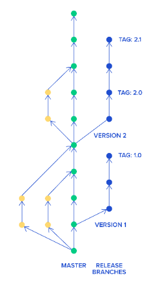

Using Git collaboratively
Working with git collaboratively
In the video below, you can view the git workflow that's follows the changes made to a working branch, committing the changes and pushing them to the repository, on Gitlab. Then, a merge request is submitted to merge these changes to the master branch of the repository. The merge request is reviewed and approved, while the working branch is deleted after serving its purpose.
Video tutorial: working collaborative with git
Disclaimer: the above video will not load for external users.
- In GitLab, click on "Branches" in the "Repository" menu on the left hand side.
- Click the "New branch" blue button.
- Type a suitable name for your branch.
- Create from master. Click "Create branch"
- In the command prompt, navigate to your repository folder, using
cd <folder_name>git pullgit branch -ato see all the available branches, including the one you just createdgit checkout <branch name>
- In your editor Make your code changes
- Save the changes
- In the command prompt,
git statusto check which files you've alteredgit add.if you're happy to add all the changed files, orgit add <file_name>if you just want one file.git commit -m "comment on what you've changed"git push
- In GitLab, click on "Merge requests" in the left hand menu.
- Click the "New merge request" blue button.
- Choose the branch you want to merge and the target branch (usually master)
- Write a description which will be helpful to the reviewer.
- Assign a reviewer.
- Tick "Delete source branch when merge request is accepted"
- Click the "Create merge request" blue button.
- Review code changes with the reviewer, and ask the reviewer to accept the merge request.
- In the command prompt,
git checkout master,git pullto get the latest code.- delete the branch locally, with
git branch -D <branch_name> git branch -ato check that your branch has been deleted.git checkout master, thengit pull, then open the code in Spyder to check that your changes are in the master.
- delete the branch locally, with
Resolving merge conflicts
How to update your branch to the latest version of the master branch, managing conflicts, merge request conflicts and review:
Video tutorial: handling and avoiding merge conflicts
Disclaimer: the above video will not load for external users.
How to resolve merge conflicts using git - if they occur
Follow the same steps as above, up to the point of raising the merge request. Before raising a merge request, you should see if there are likely to be any conflicts between the changes you've made and changes another developer might have made to the same files.
- In the command prompt, navigate to your repository folder, using
cd <folder_name>if you are not already there. git checkout mastergit pullto get the latest version of the master.git checkout <branch_name>if you do not already have it checked out.git merge master
This will attempt to automatically merge the latest version of the master into your branch. If no-one else has changed the same lines of code as you, this will be fine and you can continue to raising a merge request as above.
If not, you will get an error: Automatic merge failed, Merge conflict in <file name> and CONFLICT messages will appear on the terminal:
Auto-merging practice/temperatures_function.py
CONFLICT (content): Merge Conflict in practice/temperatures_function.py
Automatic merge failed; fix conflicts and then commit the result.
Different editors give us different tools for handling these merge conflicts, though the principles remain the same.
Spyder
- In Spyder, open that file (in this case temperatures_function.py).
- Scroll in the document to find the conflict. You will notice these strange lines where conflict has occurred:
<<<<<< HEAD
This line is the line in my branch.
=======
This line is the line in master.
>>>>>> master
The top bit above the double line is what we have in our branch (our branch is represented by the <<<<<<< HEAD statement). The bottom bit is the same line but it's saved in the master branch (symbolised as >>>>>>> master). To resolve the conflict, delete the line which you do not wish to keep, including the arrows and double lines. So for example, if you wish to keep This line is the line in my branch delete everything that's connected to the conflict so that it also shows this in your text editor:
VSCode
- In Visual Studio Code, you can open your file browser in the tools tab. Any files which have a merge conflict will have a little 'C' next to them here. Open the files which have these conflicts (in this case temperatures_function.py).
- Scroll in the document to find the conflict. You will notice these strange lines where conflict has occurred:
<<<<<< HEAD
This line is the line in my branch.
=======
This line is the line in master.
>>>>>> master
The top bit above the double line is what we have in our branch (our branch is represented by the <<<<<<< HEAD statement). This will be called the current change. The bottom bit is the same line but it's saved in the master branch (symbolised as >>>>>>> master). This will be called the incoming change. Above the conflict, you'll see some options for what you can do. You can click accept current changes, accept incoming changes, or accept both changes. Picking one of these options will resolve the conflict. Alternatively, you can go ahead and simply edit the conflicted file directly. Edit the area of conflict until you're satisfied -- making sure to remove the === line, the >>>>> line, and any duplicated code.
So for example, if you wish to keep This line is the line in my branch delete everything that's connected to the conflict so that it also shows this in your text editor:
When your're done, simply save the file.
Once the Conflict is Resolved
- Save your changes, and then update your branch in the usual way:
- In GitLab create a merge request and get it approved.
Git branching
Branch naming strategy
Following an agreed naming convention will make it much easier to keep the team's work organised. We follow use this approach:
<project_id>_<initials>_<ticket_number>_<brief-description>
Here the project_id refers to our project ID in confluence (DS218). The initials are from my name. The ticket number refers to the jira ticket number. E.g.:
DS218_CQ_167_Add-field-definitions
Naming branches in this way helps to make it very clear what change should be happening in the branch. Sometimes code review will reveal that a branch that was intended to make one specific change in fact makes several changes. This should be avoided and the code review should reject the additional changes.
General guidelines for branching and merge requests
The master branch should be kept in a good stable state (always deployable with a relevant README file). Developers create feature branches from the master branch (main trunk) and work on them. The developer only creates a short-lived feature branch (a branch from the trunk) to prevent the challenge of merging later on. Once they are done, they create merge requests in GitLab. The request get reviews by a team member or a group of developers (if it is a refactor or large changes). The comment on changes stay directly on the GitLab page and there may have discussions. Once these are done with compiling and all testing, the merge will be incorporated into the trunk by the reviewer.

Using git collaboratively exercise
Team exercise
This group exercise is designed for a team of four.
Everyone, independently, do the following:
- In GitLab, create a new branch from the master branch.
- In the command prompt, checkout your new branch (
git branch -a,git checkout <branch_name>,git pull) -
Make your code changes:
- Team member A: If result < 0, print("You'll freeze today")
- Team member B: If result > 100, print("You'll boil today")
- Team member C: Change the name of the variable "result" to "temperature"
- Team member D: Change the warning "you'd better wear suncream" to "you'd better wear a "t-shirt"
-
Commit your changes (
git status,git add.,git commit -m "comment",git push) -
In GitLab, Team member A create a new merge request. Assign a reviewer and accept the merge. Approving merge requests requires someone with the relevant assigned role and permissions.
-
In the command prompt, Team member B checkout the master and attempt to merge it into your branch. (
git checkout master,git pull,git checkout <branch_name>,git merge master) - In Spyder or VSCode open the file where there are any conflicts and decide with team member B how the conflicts should be resolved.
- Save your changes
- In the command prompt, update your branch in the usual way. (
git status,git add.,git status,git commit -m "comment",git status,git push) -
In GitLab, Team member B create a new merge request. Assign a reviewer and accept the merge.
-
Repeat previous 5 steps for Team member C and Team member D
Top tips for git
- Branches should be short-lived
- Make clean, single-purpose commits
- Test Before You Commit
- Write meaningful commit messages
- Don’t git push straight to master
- Commit early, commit often
- Don’t alter published history
- Don’t commit generated files